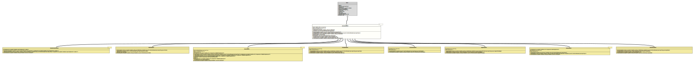

Class CmdLineValueHandler<T>
- Type Parameters:
T- The target type.
- Direct Known Subclasses:
BooleanValueHandler,DateValueHandler,DocumentValueHandler,EnumValueHandler,ImageValueHandler,SimpleCmdLineValueHandler,StringValueHandler,TimeValueHandler
The abstract base class for the value handler that takes a String value from the command line, translates it to the target type and sets the value to the property.
To circumvent possible problems with reflection in a modularised
context, the handler uses an instance of
BiConsumer
to set the property; the
BiConsumer.accept(Object, Object)
method of that instance is called with two arguments:
- the name of the property to set
- the value for that property
Basically, the implementation of such a value setter function may be
implemented in any way, but the annotation processor creates them as simple
as possible. To set a value to the attribute m_Value, it would look
like
(p,v) -> m_Value = v;and to add a value to the list attribute m_List, it would be
(p,v) -> m_List.add( v );That means that the name of the property is ignored.
But customer implementations may use other implementations as well.
- Author:
- Thomas Thrien (thomas.thrien@tquadrat.org)
- Version:
- $Id: CmdLineValueHandler.java 1061 2023-09-25 16:32:43Z tquadrat $
- Since:
- 0.1.0
- UML Diagram
-

UML Diagram for "org.tquadrat.foundation.config.cli.CmdLineValueHandler"
{kind=link}
-
Field Summary
FieldsModifier and TypeFieldDescriptionstatic final StringThe default property name that is used if no context is given: "dummyProperty".private CLIDefinitionThe CLI definition that provides the context for this value handler.private final BiConsumer<String, T> The value setter.static final StringThe error message for an invalid entry on the command line: "\'%1$s\' cannot be parsed as a valid command line parameter".static final intThe resource bundle key for the message about an invalid entry on the command line. -
Constructor Summary
ConstructorsModifierConstructorDescriptionprotectedCmdLineValueHandler(BiConsumer<String, T> valueSetter) Creates a newCmdLineValueHandlerinstance.protectedCmdLineValueHandler(CLIDefinition context, BiConsumer<String, T> valueSetter) Creates a newCmdLineValueHandlerinstance. -
Method Summary
Modifier and TypeMethodDescriptionprotected final Optional<CLIDefinition> Returns a reference to the context.protected StringReturns the name of the property that is the target for the value.protected final BiConsumer<String, T> Returns a reference for the value setter.intparseCmdLine(Parameters params) Parses the given command line snippet and stores the result to the property.final voidsetContext(CLIDefinition context) Sets the CLI definition that provides the context for this value handler.protected abstract Collection<T> translate(Parameters params) Translates the command line values that can be referenced via theparamsargument to the target type.
-
Field Details
-
DEFAULT_PROPERTY_NAME
The default property name that is used if no context is given: "dummyProperty".- See Also:
-
MSG_InvalidParameter
The error message for an invalid entry on the command line: "\'%1$s\' cannot be parsed as a valid command line parameter".- See Also:
-
MSGKEY_InvalidParameter
The resource bundle key for the message about an invalid entry on the command line.- See Also:
-
m_CLIDefinition
The CLI definition that provides the context for this value handler. -
m_ValueSetter
The value setter.
The arguments of the lambda are:
- the name of the property to set
- the value for that property
In most usages, the first argument is ignored.
-
-
Constructor Details
-
CmdLineValueHandler
Creates a newCmdLineValueHandlerinstance.- Parameters:
valueSetter- TheConsumerthat places the translated value to the property.
-
CmdLineValueHandler
Creates a newCmdLineValueHandlerinstance.- Parameters:
context- The CLI definition that provides the context for this value handler.valueSetter- TheConsumerthat places the translated value to the property.
-
-
Method Details
-
getCLIDefinition
Returns a reference to the context.- Returns:
- An instance of
Optionalthat holds the CLI definition.
-
getPropertyName
Returns the name of the property that is the target for the value.- Returns:
- The property name.
-
getValueSetter
Returns a reference for the value setter.- Returns:
- The value setter.
-
parseCmdLine
Parses the given command line snippet and stores the result to the property.- Note:
-
- This method can be overridden, but in most cases, the implementation provided here should be sufficient.
- Parameters:
params- The command line values to parse.- Returns:
- The number of values that the method took from the command line.
- Throws:
CmdLineException- An error occurred when parsing the parameters.
-
setContext
Sets the CLI definition that provides the context for this value handler.- Parameters:
context- The CLI definition.
-
translate
Translates the command line values that can be referenced via theparamsargument to the target type.- Parameters:
params- The command line values to translate.- Returns:
- A collection with the result; each entry in the collection corresponds to one value from the command line.
- Throws:
CmdLineException- The given parameters cannot be parsed to the target type.
-